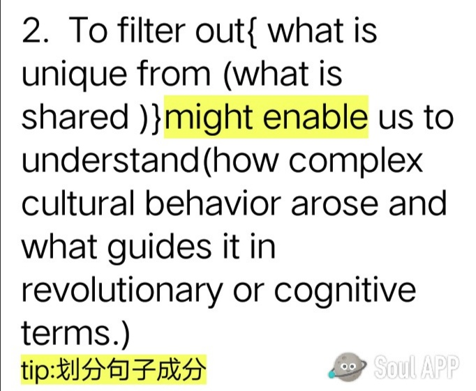

- @xixi：Owing to the remarkable development in mass communications, people everywhere are feeling new wants and are being exposed to new customs and ideas , while governments are often forced to introduce still further innovations for the reasons given above.
- @心灵:Unhappy parents rarely are provoked to wonder if they shouldn't had kids，but unhappy childless folks are bothered with the message that children are the single most important thing in the world： obviously their misery must be a direct result of the gaping baby-size holes in their lives. （2011,Reading Comprehension, part A text4)
难点提示：含有同位语从句、多个句子可以通过连接词和标点断开
- @少年:Yet increasing evidence suggests that human prejudices have been baked into these tools because the machine-learning models are trained on biased data. Far from avoiding racism, they may simply be better at hiding it. Many critics now view these tools as a form of tech-washing, where an appearance of objectivity covers mechanisms that perpetuate inequities in society.
思考题：
What is the author’s attitude towards these tools?
(A) biased (B) skeptical (C) objective (D) tolerance
词汇提示：
1.increasing evidence 越来越多的证据
2.human prejudices 人类的偏见
3.the machine-learning models机器学习的模式
4.biased 歧视性的
5.Far from：远没有
6. simply干脆
7.tech-washing 技术性洗白
8. mechanisms 机制
9.perpetuate 使…持续
10.inequities 不平等
- @Jennifer:

- @鼠标：For the women of my generation who were urged to keep juggling through the 80’s, down-shifting in the mid 90s is not so much a search for the mythical good life--growing your own organic vegetables, and risking turning into a simpler, less materialistic lifestyle --as a personal recognition of your limitations.
- @⭐：The newly described languages were often so strikingly differentfrom the well studied languages of Europe and Southeast Asia thatsome scholars even accused Boas and Sapir of fabricating theirdata.
- 解析
【核心词汇】strikingly意为“显著地”accuse意为“指责：指控”却考研fabricate的意思是“捏造”
【结构分析】
1.本题考核的知识点是：that结构、短语accuse sb.ofsth.、过去分词做定语的译法。
2.句子的主干是languages were often so.that...，其中that引导结构状语从句。有两个过去分词作定语：newly described和well studied，因为较短，可直接译为定语。主句谓语部分wereoften so strikingly different from有两种处理方法：一种是保留原文词性，译为“如此显著地不同于”；第二种是改变词性，将different变为名词，strikingly变为形容词，全句结构为“......和……的区别如此显著，以至于.…”。后者更加符合汉语的习惯。
【翻译】
新近被描绘的语言与过去已经得到充分研究的欧洲及东南亚语言之间的区别如此显著，以至于一些学者甚至指责博厄斯和萨皮尔捏造数据。